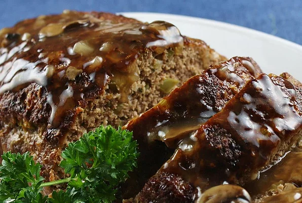

Tennessee Meatloaf

Description
My Grandmother 'Nanaw' Rowan made the most
delicious meatloaf in the state. When she
passed away, she didn't leave me her recipe,
but she left me the desire to recreate it.
I think this is it, in flavor and texture.
Don't let the number of ingredients
discourage you. It's part of the magic
in creating a masterpiece!
Ingredients
Brown Sugar Glaze:
- 1/2 cup ketchup
- 1/4 cup brown sugar
- 2 tablespoons cider vinegar
Meatloaf:
- cooking spray
- 1 onion, chopped
- 1/2 green bell pepper, chopped
- 2 cloves garlic, minced
- 2 large eggs, lightly beaten
- 1 teaspoon dried thyme
- 1 teaspoon seasoned salt
- 1/2 teaspoon ground black pepper
- 2 teaspoons prepared mustard
- 2 teaspoons Worcestershire sauce
- 1/2 teaspoon hot pepper sauce
- 1/2 cup milk
- 2/3 cup quick cooking oats
- 1 pound ground beef
- 1/2 pound ground pork
- 1/2 pound ground veal
Steps
- Combine ketchup, brown sugar, and cider
vinegar in a bowl; mix well.
- Preheat oven to 350 degrees F (175
degrees C). Spray two 9x5-inch loaf
pans with cooking spray or line with
aluminum foil for easier cleanup (see
Cook's Note).
- Place onion and green pepper in covered
microwave container and cook until
softened, 1 to 2 minutes. Set aside to
cool.
- In large mixing bowl, combine garlic,
eggs, thyme, seasoned salt, black pepper,
mustard, Worcestershire sauce, hot sauce,
milk, and oats. Mix well. Stir in cooked
onion and green pepper. Add ground beef,
pork, and veal. With gloved hands, work
all ingredients together until
completely mixed and uniform.
- Divide meatloaf mixture in half and pat
half of mixture into each prepared loaf
pan. Brush loaves with half of the
glaze; set remainder of glaze
aside.
- Bake in preheated oven for 50 minutes.
Remove pans from oven; carefully drain
fat. Brush loaves with remaining glaze.
Return to oven and bake for 10 minutes
more. Remove pans from oven and allow
meatloaf to stand for 15 minutes before
slicing.